공조냉동기계기사(구) (2016-08-21 기출문제)
1과목: 기계열역학
1. 다음 중 단열과정과 정적과정만으로 이루어진 사이클(cycle)은?
- Otto cycle
- Diesel cycle
- Sabathe cycle
- Rankine cycle
(정답률: 64%)

2. 질량이 m이고 한 변의 길이가 a인 정육면체의 밀도가 ρ이면, 질량이 2m이고 한 변의 길이가 2a인 정육면체의 밀도는?
- ρ
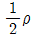
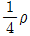
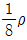
(정답률: 76%)
3. 질량 유량이 10kg/s인 터빈에서 수증기의 엔탈피가 800kJ/kg 감소한다면 출력은 몇 kW인가? (단, 역학적 손실, 열손실은 모두 무시한다.)
- 80
- 160
- 1600
- 8000
(정답률: 75%)
4. 카르노 열펌프와 카르노 냉동기가 있는데, 카르노 열펌프의 고열원 온도는 카르노 냉동기의 고열원 온도가 같고, 카르노 열펌프의 저열원 온도는 카르노 냉동기의 저열원 온도와 같다. 이때 카르로 열펌프의 성적계수(COPHP)와 카르노 냉동기의 성적계수(COPR)의 관계로 옳은 것은?
- COPHP = COPR + 1
- COPHP = COPR - 1
- COPHP = 1/COPR + 1
- COPHP = 1/COPR - 1
(정답률: 77%)
5. 카르노 사이클로 작동되는 열기관이 600K에서 800kJ의 열을 받아 300K에서 방출한다면 일은 약 몇 kJ인가?
- 200
- 400
- 500
- 900
(정답률: 72%)
6. 그림에서 T1 = 561K, T2 = 1010K, T3 = 690K, T4=383K인 공기를 작동 유체로 하는 브레이턴 사이클의 이론 열효율은?
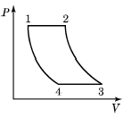
- 0.388
- 0.465
- 0.316
- 0.412
(정답률: 50%)
7. 일정한 정적비열 Cv 와 정압비열 Cp를 가진 이상기체 1kg의 절대온도와 체적이 각각 2배로 되었을 때 엔트로피의 변화량으로 옳은 것은?
- Cvln2
- Cpln2
- (Cp-Cv)ln2
- (Cp+Cv)ln2
(정답률: 49%)
8. 그림과 같이 선형 스프링으로 지지되는 피스톤-실린 더 장치 내부에 있는 기체를 가열하여 기체의 체적이 V1에서 V2로 증가하였고, 압력은 P1에서 P2로 변화하였다. 이때 기체가 피스톤에 행한 일은? (단, 실린더 내부의 압력(P)은 실린더 내부 부피(V)와 선형관계(P = aV, a는 상수)에 있다고 본다.)
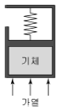
- P2V2 - P1V1
- P2V2 + P1V1
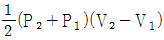
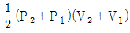
(정답률: 68%)
9. 이상기체의 압력(P), 체적(V)의 관계식 ″PVn = 일정″에서 가역단열과정을 나타내는 n의 값은? (단, CP 는 정압비열, CV 는 정적비열이다.)
- 0
- 1
- 정적비열에 대한 정압비열의 비(CP/CV)
- 무한대
(정답률: 69%)
10. 압력 200kPa, 체적 0.4m3인 공기가 정압 하에서 체적이 0.6m3로 팽창하였다. 이 팽창 중에 내부에너지가 100kJ만큼 증가하였으면 팽창에 필요한 열량은?
- 40kJ
- 60kJ
- 140kJ
- 160kJ
(정답률: 70%)
11. 복사열을 방사하는 방사율과 면적이 같은 2개의 방열판이 있다. 각각의 온도가 A방열판은 120℃, B방열판은 80℃ 일 때 단위면적당 복사 열전달량(QA, QB)의 비는?
- 1.08
- 1.22
- 1.54
- 2.42
(정답률: 60%)
12. 시스템 내의 임의의 이상기체 1kg이 채워져 있다. 이 기체의 정압비열은 1.0kJ/kgㆍK이고, 초기 온도가 50℃ 인 상태에서 323kJ의 열량을 가하여 팽창시킬 때 변경 후 체적은 변경 전 체적이 약 몇 배가 되는가? (단, 정압과정으로 팽창한다.)
- 1.5배
- 2배
- 2.5배
- 3배
(정답률: 65%)
13. 체적이 150m3인 방 안에 질량이 200kg이고 온도가 20℃ 인 공기(이상기체상수 = 0.287kJ/kgㆍK)가 들어 있을 때 이 공기의 압력은 약 몇 kPa인가?(오류 신고가 접수된 문제입니다. 반드시 정답과 해설을 확인하시기 바랍니다.)
- 112
- 124
- 162
- 184
(정답률: 70%)
14. 다음 중 강도성 상태량(intensive property)이 아닌 것은?
- 온도
- 압력
- 체적
- 비체적
(정답률: 74%)
15. 순수한 물질로 되어 있는 밀폐계가 단열과정 중에 수행한 일의 절대값에 관련된 설명으로 옳은 것은? (단, 운동에너지와 위치에너지의 변화는 무시한다.)
- 엔탈피의 변화량과 같다.
- 내부 에너지 변화량과 같다.
- 단열과정 중의 일은 0이 된다.
- 외부로부터 받은 열량과 같다.
(정답률: 65%)
16. 다음 온도-엔트로피 선도(T-S 선도)에서 과정 1-2가 가역일 때 빗금 친 부분은 무엇을 나타내는가?
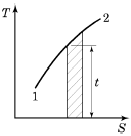
- 공업일
- 절대일
- 열량
- 내부에너지
(정답률: 77%)
17. 2MPa 압력에서 작동하는 가역 보일러에 포화수가 들어가 포화증기가 되어서 나온다. 보일러의 물 1kg당 가한 열량은 약 몇 kJ인가? (단, 2MPa 압력에서 포화온도는 212.4℃ 이고 이 온도는 일정하다. 그리고 포화수 비엔트로피는 2.4473kJ/kgㆍK, 포화증기 비엔트로피는 6.3408kJ/kgㆍK이다.)
- 295
- 827
- 1890
- 2423
(정답률: 60%)
18. 온도 200℃ , 압력 500kPa, 비체적 0.6m3/kg의 산소가 정압 하에서 비체적이 0.4m3/kg으로 되었다면, 변화 후의 온도는 얼마인가?
- 42℃
- 55℃
- 315℃
- 437℃
(정답률: 57%)
19. Carnot 냉동사이클에서 응축기 온도가 50℃ , 증발기 온도가 -20℃ 이면, 냉동기의 성능계수는 얼마인가?
- 5.26
- 3.61
- 2.65
- 1.26
(정답률: 74%)
20. 온도 150℃ , 압력 0.5kPa의 이상기체 0.287kg이 정압과정에서 원래 체적의 2배로 늘어난다. 이 과정에서 가해진 열량은 약 얼마인가? (단, 공기의 기체 상수는 0.287kJ/kgㆍK이고, 정압비열은 1.004kJ/kgㆍK이다.)
- 98.8kJ
- 111.8kJ
- 121.9kJ
- 134.9kJ
(정답률: 58%)
2과목: 냉동공학
21. 다음 카르노 사이클의 P-V선도를 T-S선도로 바르게 나타낸 것은?
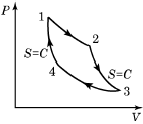
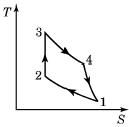
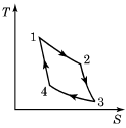
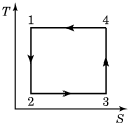
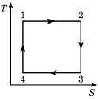
(정답률: 74%)
22. 전자밸브(solenoid valve)설치 시 주어진 사항으로 틀린 것은?
- 코일 부분이 상부로 오도록 수직으로 설치한다.
- 전자밸브 직전에 스트레이너를 장치한다.
- 배관 시 전자밸브에 과대한 하중이 걸리지 않아야 한다.
- 전자밸브 본체의 유체 방향성에 무관하게 설치한다.
(정답률: 86%)
23. 펠티에(Peltier)효과를 이용하는 냉동방법에 대한 설명으로 틀린 것은?
- 펠티에 효과를 냉동에 이용한 것이 전자냉동 또는 열전기식 냉동법이다.
- 펠티에 효과를 냉동법으로 실용화에 어려운 점이 많았으나 반도체 기술이 발달하면서 실용화되었다.
- 이 냉동방법을 이용한 것으로는 휴대용 냉장고, 가정용 특수냉장고, 물 냉각기, 핵 잠수함 내의 냉난방장치이다.
- 증기 압축식 냉동장치와 마찬가지로 압축기, 응축기, 증발기 등을 이용한 것이다.
(정답률: 82%)
24. 가로 및 세로가 각 2m이고, 두께가 20cm, 열전도율이 0.2W/m℃인 벽체로부터의 열통과량은 50W이었다. 한쪽 벽면의 온도가 30℃일 때 반대쪽 벽면의 온도는?
- 87.5℃
- 62.5℃
- 50.5℃
- 42.5℃
(정답률: 70%)
25. 팽창밸브 중에서 과열도를 검출하여 냉매유량을 제어하는 것은?
- 정압식 자동팽창밸브
- 수동팽창밸브
- 온도식 자동팽창밸브
- 모세관
(정답률: 82%)
26. 냉동창고에 있어서 기둥, 바닥, 벽 등의 철근콘크리트 구조체 외벽에 단열시공을 하는 외부단열 방식에 대한 설명으로 틀린 것은?
- 시공이 용이하다.
- 단열의 내구성이 좋다.
- 창고 내 벽면에서의 온도 차가 거의 없어 온도가 균일한 벽면을 이룬다.
- 각층 각실이 구조체로 구획되고 구조체의 내측에 맞추어 각각 단열을 시공하는 방식이다.
(정답률: 29%)
27. 냉각관의 열관류율이 500W/m2ㆍ℃ 이고, 대수평균온도차가 10℃ 일 때, 100kW의 냉동부하를 처리할 수 있는 냉각관의 면적은?
- 5m2
- 15m2
- 20m2
- 40m2
(정답률: 74%)
28. 냉매의 구비조건으로 틀린 것은?
- 임계온도가 낮을 것
- 응고점이 낮을 것
- 액체비열이 작을 것
- 비열비가 작을 것
(정답률: 63%)
29. 다음 액체냉각용 증발기와 가장 거리가 먼 것은?
- 만액식 쉘엔 튜브식
- 핀 코일식 증발기
- 건식 쉘엔 튜브식
- 보데로 증발기
(정답률: 48%)
30. 열펌프의 특징에 관한 설명으로 틀린 것은?
- 성적계수가 1보다 작다.
- 하나의 장치로 난방 및 냉방으로 사용할 수 있다.
- 대기오염이 적고 설치공간을 절약할 수 있다.
- 증발온도가 높고 응축온도가 낮을수록 성적계수가 커진다.
(정답률: 78%)
31. 시간당 2000kg의 30℃ 물을 -10℃ 의 얼음으로 만드는 능력을 가진 냉동장치가 있다. 조건이 아래와 같을 때, 이 냉동장치 압축기의 소요동력은? (단, 열손실은 무시한다.)
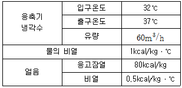
- 71kW
- 76kW
- 78kW
- 81kW
(정답률: 45%)
32. 냉동장치에서 증발온도를 일정하게 하고 응축온도를 높일 때 나타나는 현상으로 옳은 것은?
- 성적계수 증가
- 압축일량 감소
- 토출가스온도 감소
- 플래쉬가스 발생량 증가
(정답률: 82%)
33. R-22를 사용하는 냉동장치에 R-134a를 사용하려 할때, 다음 장치의 운전 시 유의사항으로 틀린 것은?
- 냉매의 능력이 변하므로 전동기 용량이 충분한지 확인한다.
- 응축기, 증발기 용량이 충분한지 확인한다.
- 가스켓, 시일 등의 선정에 유의해야 한다.
- 동일 탄화수소계 냉매이므로 그대로 운전할 수 있다.
(정답률: 82%)
34. 냉각수 입구온도 30℃, 냉각수량 1000L/min이고, 응축기의 전열면적이 8m2, 총괄열전달계수 6000kcal/m2h℃일 때 대수평균온도차 6.5℃로 하면 냉각수 출구온도는?
- 26.7℃
- 30.9℃
- 32.6℃
- 35.2℃
(정답률: 64%)
35. 다음 중 신재생에너지와 가장 거리가 먼 것은?
- 지열에너지
- 태양에너지
- 풍력에너지
- 원자력에너지
(정답률: 84%)
36. 압축기의 구조와 작용에 대한 설명으로 옳은 것은?
- 다기통 압축기의 실린더 상부에 안전두(safety head)가 있으면 액압축이 일어나도 실린더 내 압력의 과도한 상승을 막기 때문에 어떠한 액압축에도 압축기를 보호한다.
- 입형 암모니아 압축기는 실린더를 워터재킷에 의해 냉각하고 있는 것이 보통이다.
- 압축기를 방진고무로 지지할 경우 시동 및 정지 때 진동이 적어 접속 연결배관에는 플렉시블 튜브 등을 설치할 필요가 없다.
- 압축기를 용적식과 원심식으로 분류하면 왕복동 압축기는 용적식이고 스크루 압축기는 원심식이다.
(정답률: 54%)
37. 증발압력이 너무 낮은 원인으로 가장 거리가 먼 것은?
- 냉매가 과다하다.
- 팽창밸브가 너무 조여 있다.
- 팽창밸브에 스케일이 쌓여 빙결하고 있다.
- 증발압력 조절밸브의 조정이 불량하다.
(정답률: 73%)
38. 흡수식 냉동장치에 관한 설명으로 틀린 것은?
- 흡수식 냉동장치는 냉매가스가 용매에 용해하는 비율이 온도, 압력에 따라 현저하게 다른 것을 이용한 것이다.
- 흡수식 냉동장치는 기계압축식과 마찬가지로 증발기와 응축기를 가지고 있다.
- 흡수식 냉동장치는 기계적인 일 대신에 열에너지를 사용하는 것이다.
- 흡수식 냉동장치는 흡수기, 압축기, 응축기 및 증발기인 4개의 열교환기로 구성되어 있다.
(정답률: 80%)
39. 윤활유의 구비조건으로 틀린 것은?
- 저온에서 왁스가 분리될 것
- 전기 절연내력이 클 것
- 응고점이 낮을 것
- 인화점이 높을 것
(정답률: 79%)
40. 식품의 평균 초온이 0℃일 때 이것을 동결하여 온도 중심점을 -15℃까지 내리는 데 걸리는 시간을 나타내는 것은?
- 유효동결시간
- 유효냉각시간
- 공칭동결시간
- 시간상수
(정답률: 64%)
3과목: 공기조화
41. 온수난방에서 온수의 순환방식과 가장 거리가 먼 것은?
- 중력순환 방식
- 강제순환 방식
- 역귀환 방식
- 진공환수 방식
(정답률: 60%)
42. 다음 중 정압의 상승분을 다음 구간 덕트의 압력손실에 이용하도록 한 덕트 설계법은?
- 정압법
- 등속법
- 등온법
- 정압 재취득법
(정답률: 77%)
43. 유인 유닛방식에 관한 설명으로 틀린 것은?
- 각 실 제어를 쉽게 할 수 있다.
- 유닛에는 가동부분이 없어 수명이 길다.
- 덕트 스페이스를 작게 할 수 있다.
- 송풍량이 비교적 커 외기냉방 효과가 크다.
(정답률: 61%)
44. 정풍량 단일덕트 방식에 관한 설명으로 옳은 것은?
- 실내부하가 감소될 경우에 송풍량을 줄여도 실내공기의 오염이 적다.
- 가변풍량방식에 비하여 송풍기 동력이 커져서 에너지 소비가 증대한다.
- 각 실이나 존의 부하변동이 서로 다른 건물에서도 온·습도의 불균형이 생기지 않는다.
- 송풍량과 환기량을 크게 계획할 수 없으며, 외기도입이 어려워 외기냉방을 할 수 없다.
(정답률: 64%)
45. 공기냉각용 냉수코일의 설계 시 주의사항으로 틀린것은?
- 코일을 통과하는 공기의 풍속은 2~3m/s로 한다.
- 코일 내 물의 속도는 5m/s 이상으로 한다.
- 물과 공기의 흐름방향은 역류가 되게 한다.
- 코일의 설치는 관이 수평으로 놓이게 한다.
(정답률: 72%)
46. 온도 32℃, 상대습도 60%인 습공기 150kg과 온도 15℃, 상대습도 80%인 습공기 50kg을 혼합했을 때 혼합공기의 상태를 나타낸 것으로 옳은 것은?
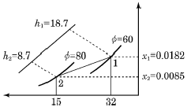
- 온도 20.15℃, 절대습도 0.0158인 공기
- 온도 20.15℃, 절대습도 0.0134인 공기
- 온도 27.75℃, 절대습도 0.0134인 공기
- 온도 27.75℃, 절대습도 0.0158인 공기
(정답률: 62%)
47. 공기정화를 위해 설치한 프리필터 효율을 ηp, 메인필터 효율을 ηm이라 할 때 종합효율을 바르게 나타낸 것은?
- ηT = 1 - (1 - ηp)(1 - ηm)
- ηT = 1 - (1 - ηp)/(1 - ηm)
- ηT = 1 - (1 - ηp)ㆍηm
- ηT = 1 - ηpㆍ(1 - ηm)
(정답률: 57%)
48. 다음 공조방식 중 냉매방식이 아닌 것은?
- 패키지 방식
- 팬코일 유닛 방식
- 룸 쿨러 방식
- 멀티유닛 방식
(정답률: 63%)
49. 습공기의 상태 변화에 관한 설명으로 틀린 것은?
- 습공기를 냉각하면 건구온도와 습구온도가 감소한다.
- 습공기를 냉각·가습하면 상대습도와 절대습도가 증가한다.
- 습공기를 등온 감습하면 노점온도와 비체적이 감소한다.
- 습공기를 가열하면 습구온도와 상대습도가 증가한다.
(정답률: 61%)
50. 온수난방에 대한 설명으로 틀린 것은?
- 온수의 체적팽창을 고려하여 팽창탱크를 설치한다.
- 보일러가 정지하여도 실내온도의 급격한 강하가 적다.
- 밀폐식일 경우 배관의 부식이 많아 수명이 짧다.
- 방열기에 공급되는 온수 온도와 유량 조절이 가능하다.
(정답률: 75%)
51. 두께 20mm, 열전도율 40W/mㆍK인 강판의 전달되는 두 면의 온도가 각각 200℃, 50℃ 일 때, 전열면 1m2당 전달되는 열량은?
- 125kW
- 200kW
- 300kW
- 420kW
(정답률: 72%)
52. 보일러의 수위를 제어하는 주된 목적으로 가장 적절한 것은?
- 보일러의 급수장치가 동결되지 않도록 하기 위하여
- 보일러의 연료공급이 잘 이루어지도록 하기 위하여
- 보일러가 과열로 인해 손상되지 않도록 하기 위하여
- 보일러에서의 출력을 부하에 따라 조절하기 위하여
(정답률: 66%)
53. 송풍기의 회전수가 1500rpm인 송풍기의 압력이 300Pa이다. 송풍기 회전수를 2000rpm으로 변경할 경우 송풍기 압력은?
- 423.3Pa
- 533.3Pa
- 623.5 Pa
- 713.3Pa
(정답률: 60%)
54. 환기 종류와 방법에 대한 연결로 틀린 것은?
- 제1종 환기 : 급기팬(급기기)과 배기팬(배기기)의 조합
- 제2종 환기 : 급기팬(급기기)과 강제 배기팬(배기기)의 조합
- 제3종 환기 : 자연급기와 배기팬(배기기)의 조합
- 자연환기(중력환기) : 자연급기와 자연배기의 조합
(정답률: 66%)
55. 덕트 내의 풍속이 8m/s이고 정압이 200Pa일 때, 전압은? (단, 공기밀도는 1.2kg/m3이다.)
- 203.9Pa
- 218.4Pa
- 239.3Pa
- 238.4Pa
(정답률: 42%)
56. 습공기의 습도 표시 방법에 대한 설명으로 틀린 것은?
- 절대습도는 건공기 중에 포함된 수증기량을 나타낸다.
- 수증기분압은 절대습도에 반비례 관계가 있다.
- 상대습도는 습공기의 수증기 분압과 포화공기의 수증기 분압과의 비로 나타낸다.
- 비교습도는 습공기의 절대습도와 포화공기의 절대습도와의 비로 나타낸다.
(정답률: 59%)
57. 온수의 물을 에어와셔 내에서 분무시킬 때 공기의 상태 변화는?
- 절대습도 강하
- 건구온도 상승
- 건구온도 강하
- 습구온도 일정
(정답률: 51%)
58. 다음 중 전공기방식이 아닌 것은?
- 이중 덕트 방식
- 단일 덕트 방식
- 멀티존 유닛 방식
- 유인 유닛 방식
(정답률: 65%)
59. 보일러의 집진장치 중 사이클론 집진기에 대한 설명으로 옳은 것은?
- 연료유에 적정량의 물을 첨가하여 연소시킴으로써 완전연소를 촉진시키는 방법
- 배기가스에 분무수를 접촉시켜 공해물질을 흡수, 용해, 응축작용에 의해 제거하는 방법
- 연소가스에 고압의 직류전기를 방전하여 가스를 이온화시켜 가스 중 미립자를 집진시키는 방법
- 배기가스를 동심원통의 접선방향으로 선회시켜 입자를 원심력에 의해 분리배출하는 방법
(정답률: 60%)
60. 아래 습공기 선도에 나타낸 과정과 일치하는 장치도는?
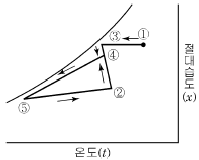
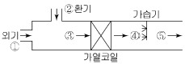
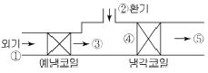
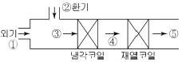
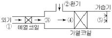
(정답률: 79%)
4과목: 전기제어공학
61. 유도전동기의 속도제어 방법이 아닌 것은?
- 극수변환법
- 역률제어법
- 2차 여자제어법
- 전원전압제어법
(정답률: 40%)
62. 변압기 절연내력시험이 아닌 것은?
- 가압시험
- 유도시험
- 절연저항시험
- 충격전압시험
(정답률: 44%)
63. 전압을 V, 전류를 I, 저항을 R, 그리고 도체의 비저항을 ρ라 할 때 옴의 법칙을 나타낸 식은?
- V = R/I
- V = I/R
- V = IR
- V = IRρ
(정답률: 79%)
64. 그림의 블록선도에서 C(s)/R(s)를 구하면?
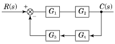
- G1G2/1+G1G2G3G4
- G3G4/1+G1G2G3G4
- G1+G2/1+G1G2+G3G4
- G1G2/1+G1G2+G3G4
(정답률: 70%)
65. G(jω) = e-jω0.4 일 때 ω = 2.5rad/sec에서의 위상각은 약 몇 도인가?
- 28.6
- 42.9
- 57.3
- 71.5
(정답률: 46%)
66. 제어기의 설명 중 틀린 것은?
- P 제어기 : 잔류편차 발생
- I 제어기 : 잔류편차 소멸
- D 제어기 : 오차예측제어
- PD 제어기 : 응답속도 지연
(정답률: 75%)
67. 동작신호에 따라 제어 대상을 제어하기 위하여 조작량으로 변환하는 장치는?
- 제어요소
- 외란요소
- 피드백요소
- 기준입력요소
(정답률: 60%)
68. 변압기유로 사용되는 절연유에 요구되는 특성으로 틀린 것은?
- 점도가 클 것
- 인화점이 높을 것
- 응고점이 낮을 것
- 절연내력이 클 것
(정답률: 78%)
69. 주파수 응답에 필요한 입력은?
- 계단 입력
- 램프 입력
- 임펄스 입력
- 정현파 입력
(정답률: 52%)
70. 유도전동기를 유도발전기로 동작시켜 그 발생 전력을 전원으로 반환하여 제동하는 유도전동기 제동방식은?
- 발전제동
- 역상제동
- 단상제동
- 회생제동
(정답률: 59%)
71. 배율기(multiplier)의 설명으로 틀린 것은?
- 전압계와 병렬로 접속한다.
- 전압계의 측정범위가 확대된다.
- 저항에 생기는 전압강하원리를 이용한다.
- 배율기의 저항은 전압계 내부 저항보다 크다.
(정답률: 53%)
72. SCR에 관한 설명 중 틀린 것은?
- PNPN소자이다.
- 스위칭 소자이다.
- 양방향성 사이리스터이다.
- 직류나 교류의 전력제어용으로 사용된다.
(정답률: 69%)
73. 그림과 같은 논리회로의 출력 X0에 해당하는 것은?
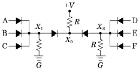
- (ABC) + (DEF)
- (ABC) + (D + E + F)
- (A + B + C)(D + E + F)
- (A + B + C) + (D + E + F)
(정답률: 52%)
74. 자기장의 세기에 대한 설명으로 틀린 것은?
- 단위 길이당 기자력과 같다.
- 수직단면의 자력선 밀도와 같다.
- 단위자극에 작용하는 힘과 같다.
- 자속밀도에 투자율을 곱한 것과 같다.
(정답률: 49%)
75. 다음의 제어기기에서 압력을 변위로 변환하는 변환 요소가 아닌 것은?
- 스프링
- 벨로스
- 다이어프램
- 노즐플래퍼
(정답률: 62%)
76. 역률에 관한 다음 설명 중 틀린 것은?
- 역률은
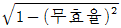
으로 계산할 수 있다. - 역률을 이용하여 교류전력의 효율을 알 수 있다.
- 역률이 클수록 유효전력보다 무효전력이 커진다.
- 교류회로의 전압과 전류의 위상차에 코사인(cos)을 취한 값이다.
(정답률: 72%)
77. 역률 0.85 , 전류 50A, 유효전력 28kW인 3상 평형 부하의 전압은 약 몇 V 인가?
- 300
- 380
- 476
- 660
(정답률: 57%)
78. 200V, 2kW 전열기에서 전열선의 길이를 1/2로 할경우 소비전력은 몇 kW인가?
- 1
- 2
- 3
- 4
(정답률: 56%)
79. PLC(programmable Logic Controller)의 출력부에 설치하는 것이 아닌 것은?
- 전자개폐기
- 열동계전기
- 시그널램프
- 솔레노이드밸브
(정답률: 59%)
80. 자동제어계의 출력신호를 무엇이라 하는가?
- 조작량
- 목표값
- 제어량
- 동작신호
(정답률: 40%)
5과목: 배관일반
81. 온수난방 설비의 온수배관 시공법에 관한 설명으로 틀린 것은?
- 공기가 고일 염려가 있는 곳에는 공기배출을 고려한다.
- 수평배관에서 관의 지름을 바꿀 때에는 편심레듀서를 사용한다.
- 배관재료는 내열성을 고려한다.
- 팽창관에는 슬루스 밸브를 설치한다.
(정답률: 78%)
82. 염화비닐관의 특징에 관한 설명으로 틀린 것은?
- 내식성이 우수하다.
- 열팽창률이 작다.
- 가공성이 우수하다.
- 가볍고 관의 마찰저항이 적다.
(정답률: 73%)
83. 강관의 용접 접합법으로 적합하지 않은 것은?
- 맞대기용접
- 슬리브용접
- 플랜지용접
- 플라스턴용접
(정답률: 68%)
84. 통기관의 종류에서 최상부의 배수 수평관이 배수 수직관에 접속된 위치보다도 더욱 위로 배수 수직관을 끌어 올려 대기 중에 개구하여 사용하는 통기관은?
- 각개 통기관
- 루프 통기관
- 신정 통기관
- 도피 통기관
(정답률: 61%)
85. 배관에서 금속의 산화부식 방지법 중 칼로라이징(calorizing)법이란?
- 크롬(Cr)을 분말상태로 배관외부에 침투시키는 방법
- 규소(Si)를 분말상태로 배관외부에 침투시키는 방법
- 알루미늄(Al)을 분말상태로 배관외부에 침투시키는 방법
- 구리(Cu)를 분말상태로 배관외부에 침투시키는 방법
(정답률: 63%)
86. 밀폐 배관계에서는 압력계획이 필요하다. 압력계획을 하는 이유로 가장 거리가 먼 것은?
- 운전 중 배관계 내에 대기압보다 낮은 개소가 있으면 접속부에서 공기를 흡입할 우려가 있기 때문에
- 운전 중 수온에 알맞은 최소압력 이상으로 유지하지 않으면 순환수 비등이나 플래시 현상 발생우려가 있기 때문에
- 수온의 변화에 의한 체적의 팽창·수축으로 배관 각부에 악영향을 미치기 때문에
- 펌프의 운전으로 배관계 각 부의 압력이 감소하므로 수격작용, 공기정체 등의 문제가 생기기 때문에
(정답률: 57%)
87. 고압 배관용 탄소 강관에 대한 설명으로 틀린 것은?
- 9.8MPa이상에 사용하는 고압용 강관이다.
- KS 규격기호로 SPPH라고 표시한다.
- 치수는 호칭지름 × 호칭두께(Sch No) × 바깥지름으로 표시하며, 림드강을 사용하여 만든다.
- 350℃ 이하에서 내연기관용 연료분사관, 화학공업의 고압배관용으로 사용된다.
(정답률: 64%)
88. 동관의 외경 산출공식으로 바르게 표시된 것은?
- 외경 = 호칭경(인치) + 1/8(인치)
- 외경 = 호칭경(인치) × 25.4
- 외경 = 호칭경(인치) + 1/4(인치)
- 외경 = 호칭경(인치) × 3/4 + 1/8(인치)
(정답률: 63%)
89. 배수트랩의 봉수파괴 원인 중 트랩 출구 수직배관부에 머리카락이나 실 등이 걸려서 봉수가 파괴되는 현상과 관련된 작용은?
- 사이펀작용
- 모세관작용
- 흡인작용
- 토출작용
(정답률: 67%)
90. 60℃ 의 물 200L와 15℃ 의 물 100L를 혼합하였을 때 최종온도는?
- 35℃
- 40℃
- 45℃
- 50℃
(정답률: 72%)
91. 가스 사용시설의 배관설비 기준에 대한 설명으로 틀린 것은?
- 배관의 재료와 두께는 사용하는 도시가스의 종류, 온도, 압력에 적절한 것일 것
- 배관을 지하에 매설하는 경우에는 지면으로부터 0.6m 이상의 거리를 유지할 것
- 배관은 누출된 도시가스가 체류되지 않고 부식의 우려가 없도록 안전하게 설치할 것
- 배관은 움직이지 않도록 고정하되 호칭지름이 13mm 미만의 것에는 2m마다, 33mm 이상의 것에는 5m마다 고정장치를 할 것
(정답률: 72%)
92. 강관작업에서 아래 그림처럼 15A 나사용 90° 엘보 2개를 사용하여 길이가 200mm가 되게 연결 작업을 하려고 한다. 이때 실제 15A 강관의 길이는? (단, a : 나사가 물리는 최소길이는 11mm, A : 이음쇠의 중심에서 단면까지의 길이는 27mm로 한다.)
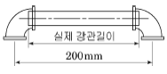
- 142mm
- 158mm
- 168mm
- 176mm
(정답률: 67%)
93. 급탕배관 시공에 관한 설명으로 틀린 것은?
- 배관의 굽힘 부분에는 벨로스 이음을 한다.
- 하향식 급탕주관의 최상부에는 공기빼기 장치를 설치한다.
- 팽창관의 관경은 겨울철 동결을 고려하여 25A 이상으로 한다.
- 단관식 급탕배관 방식에는 상향배관, 하향배관 방식이 있다.
(정답률: 66%)
94. 통기관의 설치 목적으로 가장 적절한 것은?
- 배수의 유속을 조절한다.
- 배수 트랩의 봉수를 보호한다.
- 배수관 내의 진공을 완화한다.
- 배수관 내의 청결도를 유지한다.
(정답률: 63%)
95. 급수방식 중 압력탱크 방식의 특징으로 틀린 것은?
- 높은 곳에 탱크를 설치할 필요가 없으므로 건축물의 구조를 강화할 필요가 없다.
- 탱크의 설치위치에 제한을 받지 않는다.
- 조작상 최고, 최저의 압력차가 없으므로 급수압이 일정하다.
- 옥상탱크에 비해 펌프의 양정이 길어야하므로 시설비가 많이 든다.
(정답률: 53%)
96. 일반적으로 배관계의 지지에 필요한 조건으로 틀린것은?
- 관과 관내 유체 및 그 부속장치, 단열피복 등의 합계 중량을 지지하는데 충분해야 한다.
- 온도변화에 의한 관의 신축에 대하여 적응할 수 있어야 한다.
- 수격현상 또는 외부에서의 진동, 동요에 대해서 견고하게 대응할 수 있어야 한다.
- 배관계의 소음이나 진동에 의한 영향을 다른 배관계에 전달하여야 한다.
(정답률: 80%)
97. 냉매배관 시 주의사항으로 틀린 것은?
- 굽힘부의 굽힘반경을 작게 한다.
- 배관 속에 기름이 고이지 않도록 한다.
- 배관에 큰 응력 발생의 염려가 있는 곳에는 루프형 배관을 해 준다.
- 다른 배관과 달라서 벽 관통 시에는 슬리브를 사용하여 보온 피복한다.
(정답률: 74%)
98. 지역난방의 특징에 관한 설명으로 틀린 것은?
- 대기 오염물질이 증가한다.
- 도시의 방재수준 향상이 가능하다.
- 사용자에게는 화재에 대한 우려가 적다.
- 대규모 열원기기를 이용한 에너지의 효율적 이용이 가능하다.
(정답률: 77%)
99. 동관작업용 사이징 툴(sizing tool)공구에 관한 설명으로 옳은 것은?
- 동관의 확관용 공구
- 동관의 끝부분을 원형으로 정형하는 공구
- 동관의 끝을 나팔형으로 만드는 공구
- 동관 절단 후 생긴 거스러미를 제거하는 공구
(정답률: 69%)
100. 급탕배관 시 주의사항으로 틀린 것은?
- 구배는 중력순환식인 경우 1/150 , 강제순환식에서는 1/200 로 한다.
- 배관의 굽힘 부분에는 스위블 이음으로 접합한다.
- 상향배관인 경우 급탕관은 하향구배로 한다.
- 플랜지에 사용되는 패킹은 내열성재료를 사용한다.
(정답률: 67%)